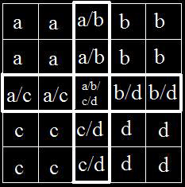
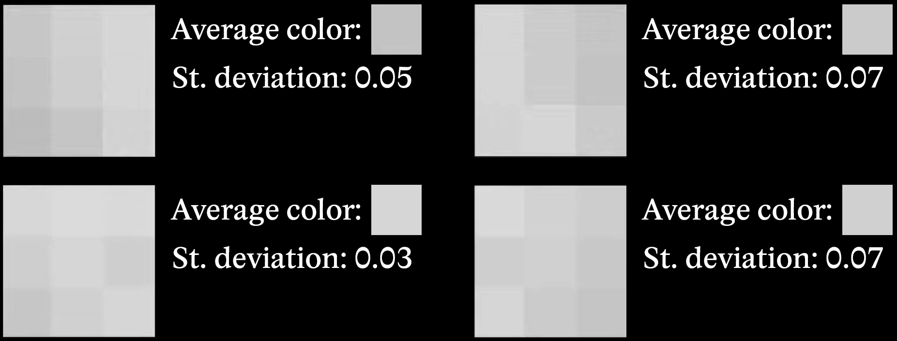
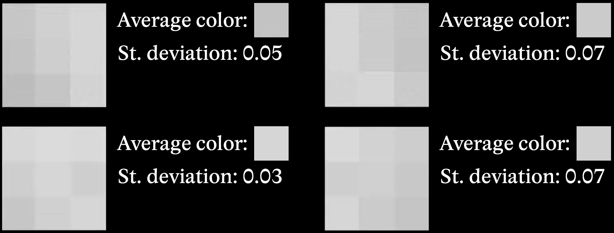
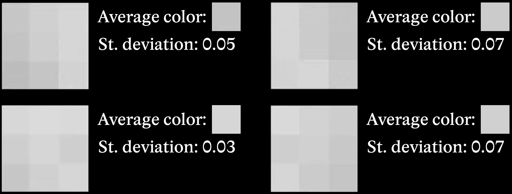

In the 1970s Michiyoshi Kuwahara worked on developing medical imaging of dynamic heart muscle. The created images would come out with a lot of noise. He devised his image smoothing technique designed to reduce noise while preserving edges.
How it works
The filter sets a square area around a pixel, divides the are into 4 overlapping sub-regions. For each sector it calculates the average color value and the standart deviation, afterwards the pixel is asigned the value of the sub-region the lowest standart deviation (most similar pixels).
If a pixel is just outside an edge, the filter will usually choose a smooth region on the same side, away from the edge. If the pixel is right on the edge, it tends to pick the smoother of the two sides – whichever has less variation.


For color images, the filter should not be performed by applying the filter to each RGB channel separately, rather than HSV color space should be used.
The Blockiness Problem
Each pixel has the same weight, therefore while calculating it creates blocky artifacts.
Generalized Kuwahara Filter
Giuseppe Papari and his team introduced several improvements to the original filter. They replaced the square window with a circular one divided into 8 segments, added Gaussian weighting to emphasize central pixels, and refined the method for determining the final output color.
We need to calculate the the chosen pixel's contrubution to a sector. To figure out what sector is the pixel in. The following equasion is used:
Anisotropic Kuwahara Filter
Instead of gaussian weight this filter version uses polynomials to approximate the pixel weight
This results in smoother transitions between regions, preserving edges while eliminating chunkiness.
Usage
On the left: Classic Kuwahara. On the right: Antialiased version. Notice smoother transitions and preserved detail.
Sources
The Antialiasing Kuwahara filter modernizes a classic technique, improving visual quality and maintaining important edge features. It’s a great example of combining statistical rigor with perceptual improvements.
 
